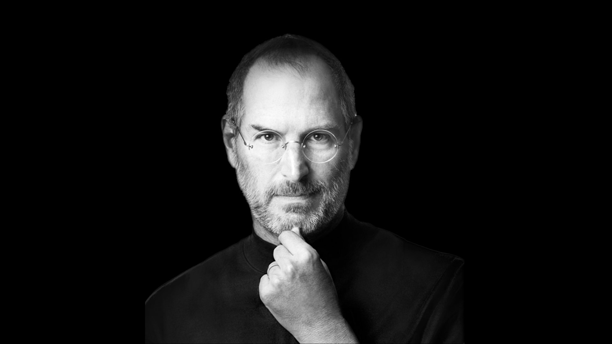

Steve Jobs
Co-founder, chairman and CEO of Apple Inc. Co-founder, primary investor and chairman of Pixar. Founder, chairman and CEO of NeXT

The Steve Jobs's Timeline
Feb 1955
Steve was born in San Francisco, the son of Abdulfattah Jandali and Joanne Schieble. He is quickly adopted by Paul and Clara Jobs 1960
The Jobs family moves from San Francisco to Mountain View, a suburban town in Santa Clara county, more commonly known as Silicon Valley 1969
Steve Jobs meets Steve Wozniak, 5 years older, through a mutual friend. Woz and Steve share a love of electronics, Bob Dylan, and pranks 1972
Steve and Woz build and illegally sell 'blue boxes' that allow to make phone calls for free Mar 1976
Woz and Steve show the early Apple I board at the Homebrew Computer Club Apr 1976
Apple Computer Inc. is incorporated by Steve Jobs, Steve Wozniak and Ron Wayne 1978
The Apple II becomes the first mass-market personal computer, with impressive sales around the US. Apple becomes a symbol of the personal computing revolution Sep 1985
Steve Jobs resigns from Apple and starts NeXT with five other refugees from Apple. Apple announces it will sue NeXT Jan 1992
NeXT licenses its operating system, NeXTSTEP, to run on x86 machines Dec 1996
Apple, which was desperately looking for a modern operating system to buy, eventually buys NeXT for $400 million. Steve Jobs is named "informal adviser" to Apple CEO Gil Amelio July 1997
Gil Amelio is ousted by the Apple Board of directors after a disastrous quarter. Steve Jobs is named interim CEO in his place and installs his NeXT executive team at the top of Apple Aug 2011
Steve Jobs resigns as CEO of Apple, with the words 'I have always said if there ever came a day when I could no longer meet my duties and expectations as Apple's CEO, I would be the first to let you know. Unfortunately, that day has come.' Tim Cook becomes Apple CEO Oct 2011 - Steve Jobs dies at home, surrounded by his family
Steve was born in San Francisco, the son of Abdulfattah Jandali and Joanne Schieble. He is quickly adopted by Paul and Clara Jobs 1960
The Jobs family moves from San Francisco to Mountain View, a suburban town in Santa Clara county, more commonly known as Silicon Valley 1969
Steve Jobs meets Steve Wozniak, 5 years older, through a mutual friend. Woz and Steve share a love of electronics, Bob Dylan, and pranks 1972
Steve and Woz build and illegally sell 'blue boxes' that allow to make phone calls for free Mar 1976
Woz and Steve show the early Apple I board at the Homebrew Computer Club Apr 1976
Apple Computer Inc. is incorporated by Steve Jobs, Steve Wozniak and Ron Wayne 1978
The Apple II becomes the first mass-market personal computer, with impressive sales around the US. Apple becomes a symbol of the personal computing revolution Sep 1985
Steve Jobs resigns from Apple and starts NeXT with five other refugees from Apple. Apple announces it will sue NeXT Jan 1992
NeXT licenses its operating system, NeXTSTEP, to run on x86 machines Dec 1996
Apple, which was desperately looking for a modern operating system to buy, eventually buys NeXT for $400 million. Steve Jobs is named "informal adviser" to Apple CEO Gil Amelio July 1997
Gil Amelio is ousted by the Apple Board of directors after a disastrous quarter. Steve Jobs is named interim CEO in his place and installs his NeXT executive team at the top of Apple Aug 2011
Steve Jobs resigns as CEO of Apple, with the words 'I have always said if there ever came a day when I could no longer meet my duties and expectations as Apple's CEO, I would be the first to let you know. Unfortunately, that day has come.' Tim Cook becomes Apple CEO Oct 2011 - Steve Jobs dies at home, surrounded by his family
It's more fun to be a pirate than to join the Navy.
Steve Jobs - Wikiquote